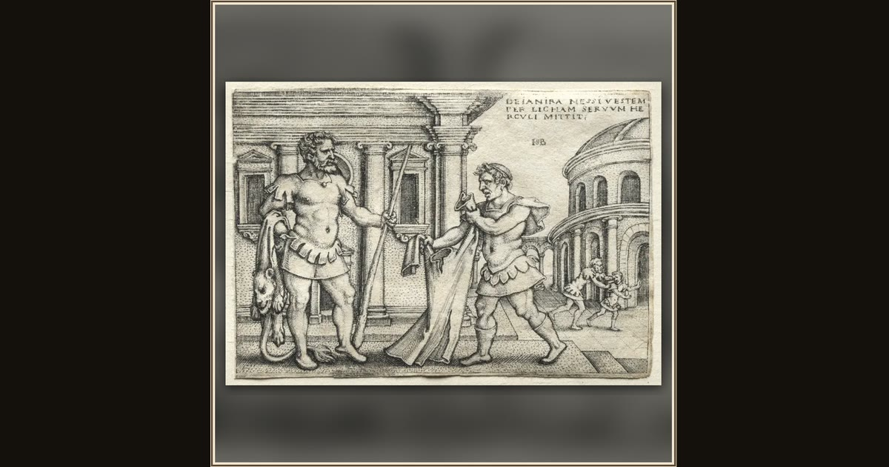

The Labors of Hercules: Hercules Receiving the Garment Steeped in Nessus' Blood
Hans Sebald Beham (German, 1500–1550) · 1542 · cma
Lichas presents a robe to Hercules in Beham's engraving. Deianeira instructs him to carry her prepared gift to her absent husband (600). Explore its place in Sophocles's Plays, Trachiniae, line 580.